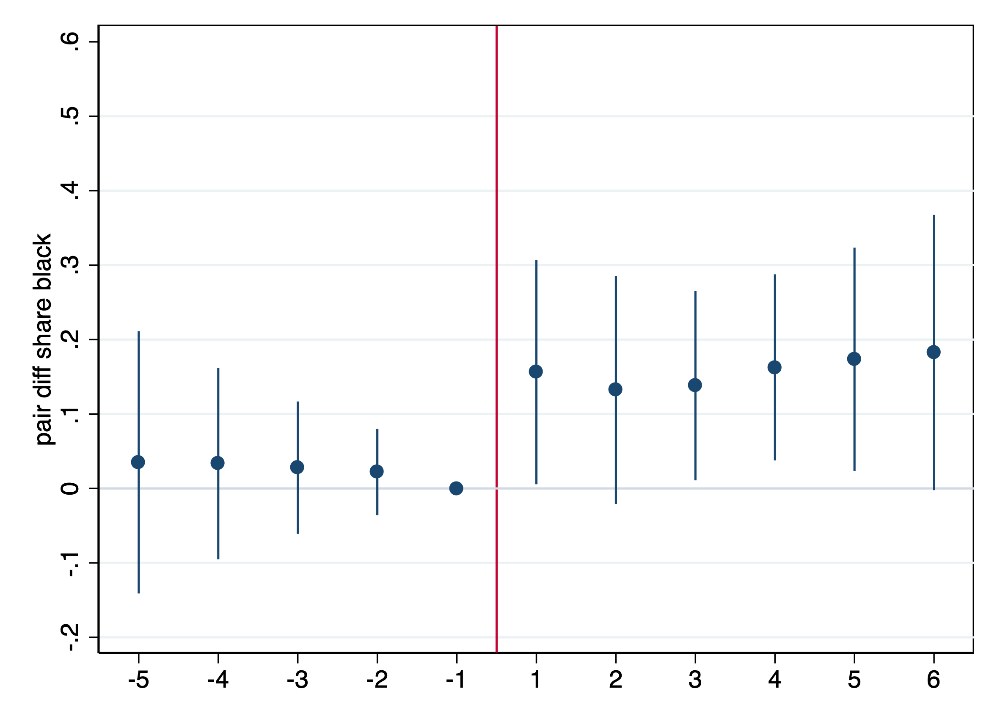
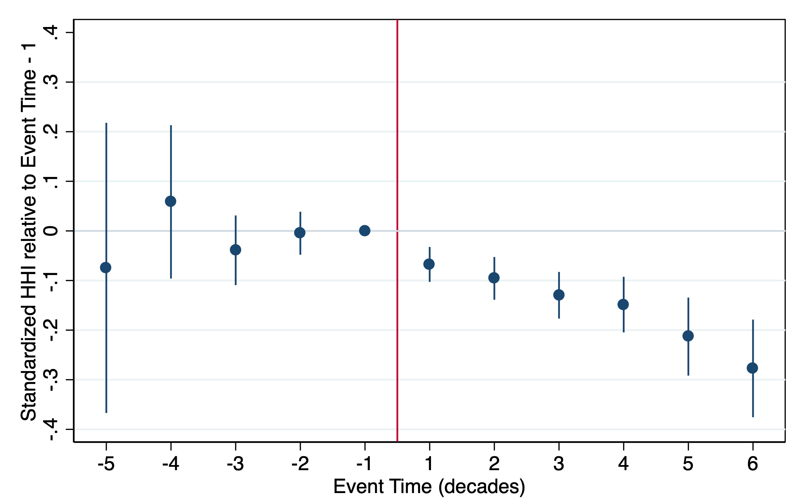

Work in Progress
The (Express)Way to Segregation: Evidence from Chicago Metropolitan Area
I investigate how man-made barriers shape residential racial segregation in the urban context. I exploit the construction of expressways in Chicago in the mid 1950s as a source of variation in neighborhoods' connectivity. While these multilane roads increase connections among distant locations, they are also likely to locally divide areas where they pass by, hence creating barriers to interaction between nearby communities. I begin by documenting the effect of proximity to the interstate network on the census tract share of black residents and other relevant outcome variables dynamically over time, running difference-in-differences specifications with multiple time periods. Then, I preliminarily estimate the barrier effect of expressways on opposite sides of the lanes, running a spatial matching over time. From a first set of results, I find that (i) the share of black residents increases in areas close to the interstate, and disproportionately more on one side of the lane; (ii) the value of houses drops close to the interstate, and symmetrically on both sides of the road, consistent with an overall disamenity effect of interstates in the neighborhood; (iii) there is no effect on household income.
Relying on a unique novel dataset at the census block level, a future part of this research seeks to investigate the channels at work. Particular emphasis is put in separating a barrier from a sorting effect of interstate construction. The findings will shed light on the possibly unintended long-lasting neighborhood effects of transport infrastructures that are so pervasive in the landscape of many cities.

The Fastest Route to Specialization? Evidence from the Expansion of the Italian Highway System
This project investigates the local effects of highway construction in modern Italy. How did transport infrastructure improvements affected regional specialization, and thus the economic geography of the country? Over 5,000 km of highways were planned and built in the post-War reconstruction of Italy, between 1955 and 1975, and the network remained basically unchanged since then. The first set of results from a multi-period Difference-in-Differences estimation shows that being connected to an highway locally reduces industrial specialization by about 0.1 s.d. in the first decade, and the effect persistently increases in absolute terms in the following years. Next, I will employ an instrumental variables estimation, to address the endogeneity issues related to both the location of the network, and the timing of its construction. To tackle the methodological challenges of estimating aggregate treatment effects in an empirical setting with treatment spillover effects, a structural estimation will complement the reduced form analysis.

Railroads, Location Fundamentals, and the Growth of Cities: Evidence from 19th Century Canada
This project exploits the immigration to the Canadian Prairies at the turn of the 20th century to investigate what are the determinants of the distribution of economic activity across space. How do location fundamentals and market access interact to shape the pattern of settlement and the growth of cities? In what ways do ethnic agglomerations develop to mark the success of an area? Relying on a unique novel panel dataset linking population patterns, soil characteristics, and access to markets at a finely granular spatial level, this setting is also suitable for drawing conclusions over the long run. To what extent do initial conditions and history matter in explaining differences in economic activity today?

Other Publications
Atlantia
with G. Rolnik and S. Feltri. Stigler Center Case Study n. 6, June 2020
During a torrential rainstorm on August 14, 2018, a 210-meter (690 ft) section of the Ponte Morandi bridge collapsed. The Ponte Morandi, also known as the Genoa Bridge, forms a critical artery of European route E80 linking Italy and France. In the collapse, between 30 to 35 cars and three trucks were reported to have fallen from the bridge. The disaster caused a major political controversy about the poor state of infrastructure in Italy and the privatization of Italy?s highways. The Genoa Bridge was part of a motorway system operated by Autostrade, a subsidiary of the Atlantia holding company controlled by the Benetton Family, one of the most powerful family business dynasties in Italy. The media crisis and political storm that followed threatened the concession under which Autostrade operated the motorways in Italy.